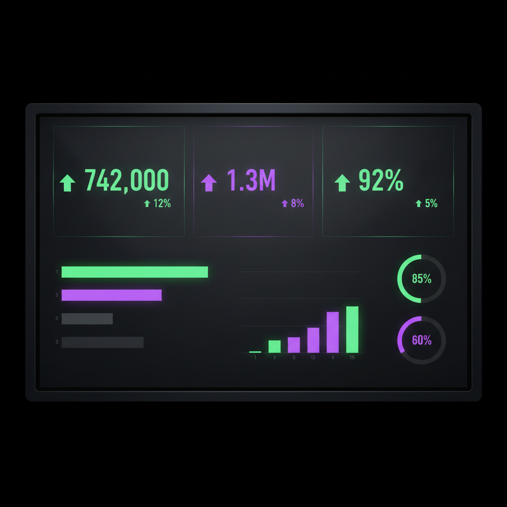

Every business generates numbers. Website visits, email opens, social media followers, sales, refunds, sign-ups. The problem is not a lack of data. It is knowing which numbers actually matter.
A key performance indicator, or KPI, is a number that directly tells you something about the health of your business. Not every metric is a KPI. A KPI is specifically tied to a goal and helps you make a decision. If a number does not help you decide what to do next, it is not a KPI, it is just a number.
Here are the KPIs that matter most for small businesses, why they matter, and how to think about tracking them.
1. Revenue
This is the most obvious one and it is still the most important. Revenue is the total amount of money your business has brought in over a given period. It is the starting point for everything else.
Track revenue monthly and compare it to the same month last year. This tells you whether you are growing. A single month means nothing in isolation. The trend is what matters.
Revenue is not profit, but without revenue there is no profit. Track it first, track it always.
2. Profit margin
Revenue tells you how much money came in. Profit margin tells you how much you keep. A business with high revenue but thin margins is working very hard for very little return.
Calculate your profit margin by subtracting all costs from revenue, then dividing by revenue. A healthy small business typically aims for a net profit margin between 10% and 20%, though this varies by industry.
If your revenue is growing but your profit margin is shrinking, something in your costs is out of control. That is a signal to investigate, not celebrate.
3. Customer acquisition cost (CAC)
This is how much it costs you to get one new customer. Divide your total marketing and sales spend by the number of new customers acquired in that period.
If you spent £2,000 on marketing last month and gained 40 new customers, your CAC is £50. That number only means something when you compare it to how much each customer is worth, which brings us to the next KPI.
4. Customer lifetime value (CLV)
This is the total revenue a single customer generates over the entire time they do business with you. A customer who buys once for £100 has a very different value than one who spends £50 per month for three years.
The relationship between CAC and CLV is one of the most important numbers in business. If your CLV is three times your CAC or more, your business model is sustainable. If CAC is close to or higher than CLV, you are spending too much to acquire customers who do not stick around.
5. Conversion rate
This measures how many people take a desired action out of the total who had the opportunity. It applies everywhere:
- Website conversion rate: visitors who buy or sign up divided by total visitors
- Landing page conversion rate: leads captured divided by page visits
- Email conversion rate: people who clicked and took action divided by total recipients
A low conversion rate means your traffic or audience is not turning into customers. You can fix this by improving your offer, your messaging, or your user experience. But you can only fix it if you are tracking it.
6. Churn rate
If you have recurring revenue, subscriptions, memberships, or retainers, churn rate measures how many customers you lose each period. A 5% monthly churn means you lose 5% of your subscribers every month.
High churn is a silent killer. You can keep acquiring new customers, but if you are losing them just as fast, you are running on a treadmill. Reducing churn by even 1% can have a massive impact on long-term revenue.
7. Website traffic and sources
How many people visited your site and where did they come from? This tells you whether your marketing channels are working. If organic search traffic is growing, your SEO is paying off. If paid traffic is flat despite increased spend, something needs adjusting.
Do not track traffic as a vanity metric. Track it alongside conversion rate. Ten thousand visitors with a 0.1% conversion rate is worse than one thousand visitors with a 5% rate.
8. Monthly recurring revenue (MRR)
If your business has subscriptions or retainers, MRR is the predictable revenue you can count on each month. It is the foundation of planning because you know it is coming.
Track MRR growth, new MRR added, expansion MRR from existing customers, and lost MRR from cancellations. This breakdown tells you whether you are growing through new sales, upselling existing customers, or losing ground to cancellations.
How many KPIs should you track?
Five to ten. That is it.
The temptation is to track everything. Resist it. A dashboard with 30 KPIs is a dashboard where nothing stands out. The whole point of a KPI is that it is key. If everything is important, nothing is.
Start with the five numbers that most directly affect your ability to grow and sustain the business. For most small businesses, that means:
- Revenue
- Profit margin
- Conversion rate
- Customer acquisition cost
- Customer lifetime value
Add more only when you have a specific reason. If you run subscriptions, add churn rate and MRS. If you run paid ads, add cost per click and return on ad spend. But start lean and expand deliberately.
The KPI test
For each number on your dashboard, ask: "If this number changed significantly, would I take a different action?" If the answer is no, it is not a KPI. It is just a metric taking up space.
How to display KPIs on a dashboard
The best way to display KPIs is with large, clear numbers accompanied by a trend indicator. Here is what works:
- Big number first. The KPI value should be the largest element. £12,450 not buried in a paragraph.
- Trend arrow or percentage. Show whether the number is up or down compared to the previous period. +12% vs last month in green. -5% in red.
- Period label. Make it clear what time frame you are looking at. "This month" or "Q3 2026" so there is no confusion.
- Group related KPIs. Revenue, orders, and average order value belong together. CAC and CLV belong together. Layout should reflect relationships.
Avoid cluttering KPI cards with extra detail. The number, the trend, and the period. That is enough for a glance. Anyone who wants more detail can click through to a detailed view.
Need help tracking the right numbers?
We build custom dashboards that focus on the KPIs that matter for your specific business. No bloat, no noise, just the numbers that drive decisions. Get in touch for a free consultation.
Frequently asked questions
What are the most important KPIs for a small business?
The most important KPIs depend on your business model, but almost every small business should track revenue, profit margin, customer acquisition cost, customer lifetime value, and conversion rate. These five numbers tell you whether you are growing, profitable, and efficient.
How many KPIs should a small business track?
Five to ten is the sweet spot. Too few and you miss important signals. Too many and none of them get attention. Start with the five numbers that most directly affect your ability to grow and add more only when you have a clear need.
What is the difference between a KPI and a metric?
A metric is any number you can measure, website visits, email opens, social followers. A KPI is a metric that directly ties to a business goal and drives a decision. Not every metric is a KPI. The difference is whether the number helps you decide what to do next.